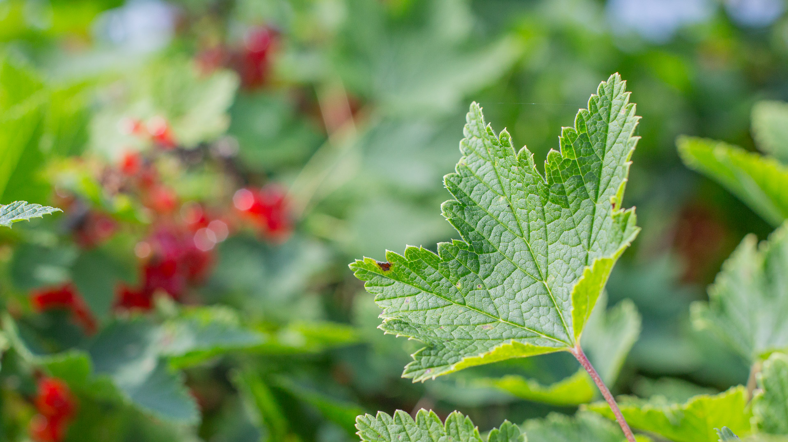

Herukat
Herukat
Tarjonnastamme löydät runsaan valikoiman erilaisia herukkalajikkeita kaikissa väreissä. Lajikkeet soveltuvat eri käyttötarkoituksiin ja niiden maku ja kasvutavat ovat keskenään erilaisia, joten jokaiseen käyttötarkoitukseen niin ammattiviljelijöille kuin kotipuutarhaan pitäisi löytyä oikea lajike. Ota rohkeasti yhteyttä kysyäksesi lisätietoja!
Herukoita on saatavilla sekä metsätaimikennoon juurrutettuina viljelijätaimina että 3L pyöreään ruukkuun juurrutettuina taimina. Isoissa 3L ruukuissa pyrimme pitämään taimen korkeuden maltillisena (alle 50cm), jotta saisimme niihin kasvatettua mahdollisimman monta kasvuversoa. Ruukuissa onkin myyntikunnossa minimissään kolme versoa, mutta tyypillisesti yli viisi. Viljelijätaimissa on toimitettaessa pääsääntöisesti yksi verso ja haaroittuminen tapahtuu vasta viljelyksillä.
Mustaherukka
Ribes NigrumLajikkeet
- Hedda
- Melalahti
- Mortti
- Öjebyn
- Ola
- Mikael
- Marski
- Ben Tron
Viherherukka
Ribes NigrumLajikkeet
- Venny
- Vilma
Punaherukka
Ribes RubrumLajikkeet
- Punainen Hollantilainen
- Katri
- Punahilkka
Valkoherukka
Ribes RubrumLajikkeet
- Valkoinen Suomalainen
- Lepaan Valkea